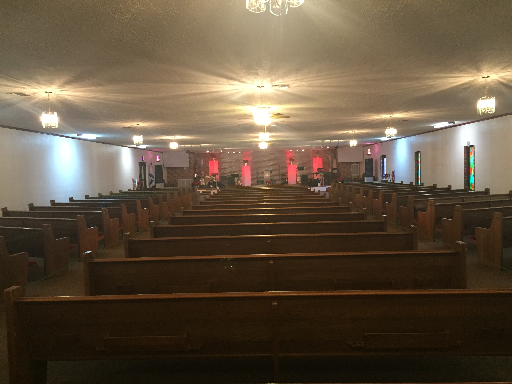

Come Worship With Us
Located in Dudley, NC close to Goldsboro, NC our Church was founded in August of 1964.
- As a church we would like to reach out to our community
- As a part of the Assemblies of God, we are part of a large group of Spanish churches.
- Our new Pastors Jose' and Nancy Maldonado have been with us since 2013.
- Come join and worship with us.

Iglesia Casa De Adorcaion
2329 Arrington Bridge Rd.
Dudley, NC 28333
(919)920-5706
2329 Arrington Bridge Rd.
Dudley, NC 28333
(919)920-5706